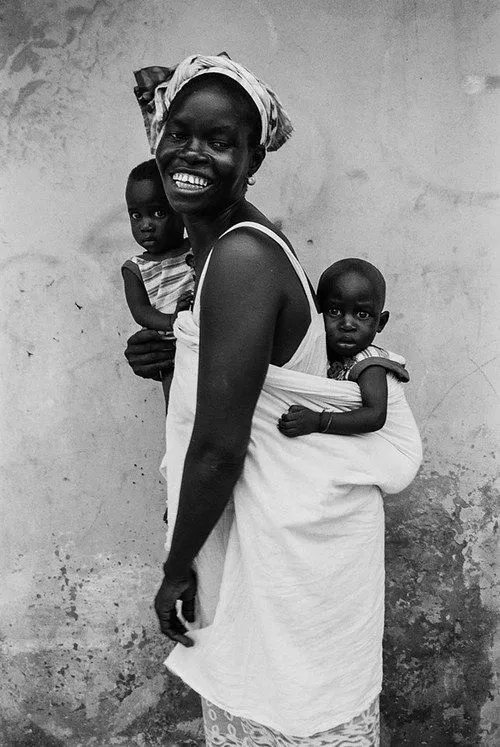
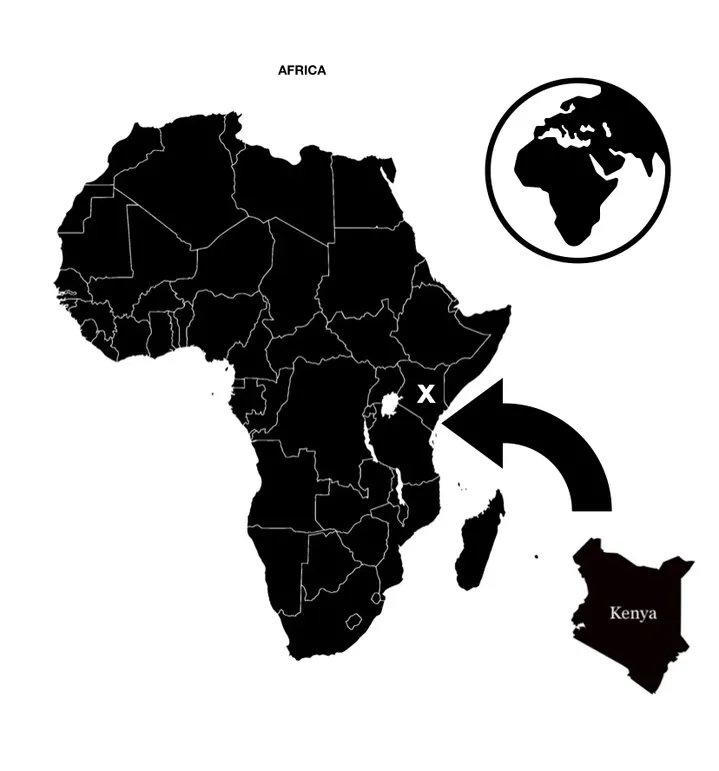

Health care in Africa remains the worst in the world. Despite widespread poverty, an astonishing 50 percent of the region’s health expenditure is financed by out-of-pocket payments from individuals.
Most of the region lacks the infrastructure to deliver health care and faces a severe shortage of trained medical personnel. As Africa's economies improve, the demand for good quality health care will only increase further. There is limited access to healthcare services in the low and middle income African countries due to poverty, low education, in adequate healthcare systems, and shortage of healthcare professionals.
Access is still the greatest challenge to health care delivery in Africa. Fewer than 50% of Africans have access to modern health facilities. Many African countries spend less than 10% of their GDP on health care. Also, there is a shortage of trained health care professionals from Africa.
Places like Kenya- There is one doctor to every 5,000 inhabitants and there can be huge variation in standards of care across geographical areas, private and public facilities, and the type of treatment available. The best private hospitals are to be found in the larger cities such as Nairobi and Mombasa, offering the kind of provision akin to that available in developed countries for many conditions. Uganda- While the standard of medical facilities in Uganda is different to those found in developed countries, there are private clinics in Kampala. Publicly run hospitals, and those in rural areas, may be overcrowded and under-stocked, and private clinics very expensive.

RJW Foundation is designed to strengthen the capacity of African institutions to carry out internationally competitive research. These range widely in focus, from improving the survival and health prospects of mothers and babies, surgical/critical health care, addressing chronic disease and building resilient and responsive health systems throughout the region.Together we can build strong network of Institutions teaching and providing proper Healthcare in these developing countries. Beyond the ambition to change the physical nature and effects of disease, the foundation seeks to influence the trajectory of thought and ambition and inspire future generations to follow in a culture of concern and responsibility for others with a strong emphasis on assisting those within the community who may need more help than others, to believe in the power of collaboration and to opt if ever given a choice to lift others up first..
